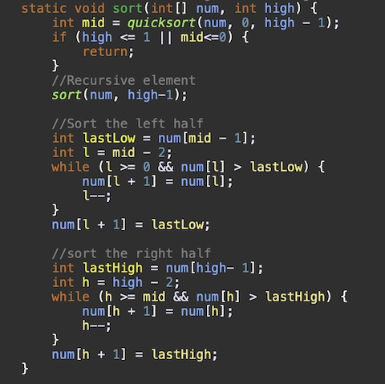
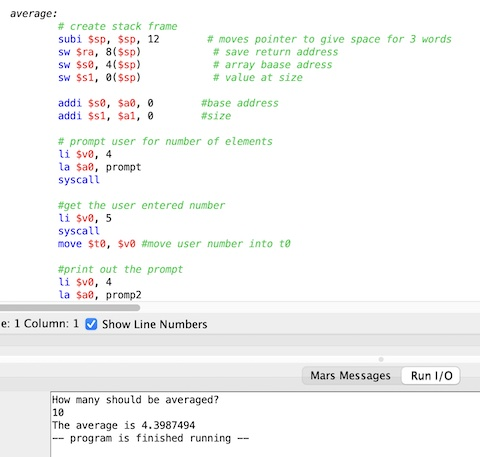

Projects
Class Project 1:

This project was one of the final projects for my intro to java class. The project was to make your own sorting algorithm. My group's algorithm combined merge sort and insertion sort. Our own sort is a lot slower than quicksort because we are combining two sorts that are both efficient individually but not efficient together. Also, with our own sort, we are getting a stack overflow error if we try to sort anything larger than 9,000 integers. So, us making our own sort is not at all efficient, and we should stick to the few sorts that are efficient.
Class Project 2:
